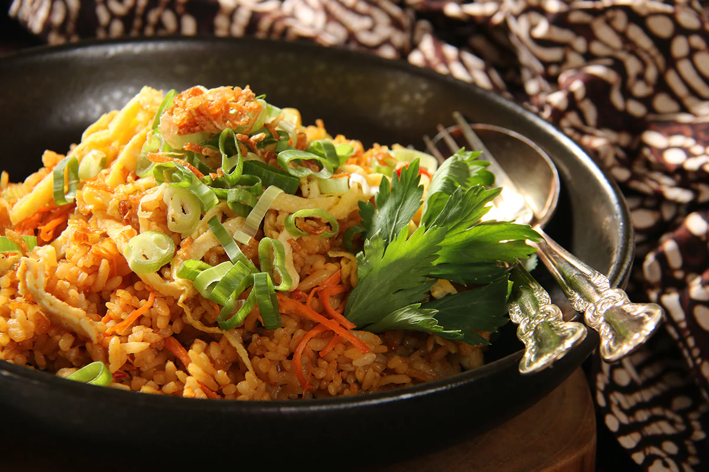

A highly-versatile dish, Nasi Goreng (literally translated as ‘fried rice’) is an Indonesian dish that has its roots in Southern Chinese culture. It mainly consists of seasoned rice stir-fried with pieces of meat and vegetables. This dish originated from people’s concern about ways to use leftover rice. It is not clear exactly when the Indonesians adopted the recipe of Chinese fried rice and put their own traditional ‘twist’ on Nasi Goreng, but some say it happened around the 10th century, during Sriwijaya’s reign when the trade between Indonesia and China flourished. Nowadays, almost every region in Indonesia had its own signature recipe of Nasi Goreng (such as Nasi Goreng Jawa, Nasi Goreng Aceh, Nasi Goreng Padang, etc.) and you can find it in almost every corner of every street. As mentioned before, this dish is very versatile, which means if you are having trouble finding one or two ingredients, you can always twist the recipe by using alternative ingredients that suit your taste and are easily available.
Stit-fry all the spices in vegetable oil until fragrant. Then add the beaten eggs and a pinch of salt, and stir well. Before the eggs get cooked, quickly add the proteins and the rice that was cooled overnight, Stir aain for a while. When the flavors start to combine with each other, add the sot sauce and sweet soy souce, and stir well. Nasi Goreng is ready to be served.